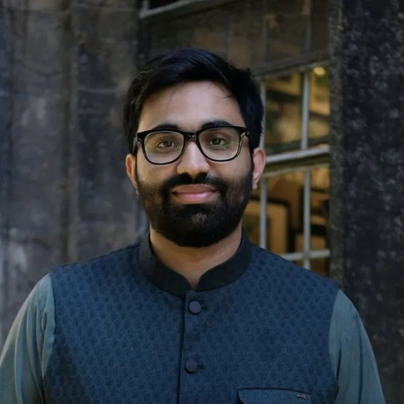

Data & AI Consultant · Lahore, Pakistan
I’m Rukhshan. I help teams make sense of their data.
For the past six years I’ve worked with startups, non-profits, and governments in Pakistan and the US. I build data pipelines and dashboards, train analysts, and more recently have been building AI tools that let people ask questions of their data directly — including a production analytics agent that cut reporting turnaround from over two days to under ten minutes. I work with teams around the world, remotely.

Services
Analytics & dashboards
Executive dashboards and recurring reporting in Tableau, Looker Studio, and Metabase. I also build custom dashboards in React and HTML, using AI coding tools to ship them fast.
Data engineering
Data pipelines and warehouses in Python, SQL, BigQuery, and AWS.
AI-assisted analytics
Internal tools that turn plain-English questions into checked, reproducible reports — analytics agents on Claude and BigQuery, served through MCP servers, with hybrid designs that reuse a validated query library for reliability. I also build evaluation datasets to keep these systems honest.
Training & capacity building
Workshops in Python, R, SQL, and Stata for public-sector officials, company teams, and students — including 30+ government officials and a two-day Python course for the social sector.
Experience
-
Jul 2025 — present
Independent Data & AI Consultant
I advise mission-driven and social-sector organisations on getting more value from their data. For an ed-tech client I built a production analytics agent on Claude and BigQuery, served through an MCP server, that turns natural-language questions into validated reports and cut turnaround from over two days to under ten minutes. I also lead data management for an education RCT covering 2,000 students, build evaluation datasets for ML systems, and prototyped energy-sector tools with the London School of Economics, presented to senior ministers and the Prime Minister’s Office.
-
2025
Data & Strategy Analyst · Waseela
Built pipelines and four executive dashboards covering pricing, inventory, and demand, used in over $4M of annual revenue decisions — including a demand-forecasting view tracking $500K+ of stock across 11 warehouses. Reusable data models cut ad-hoc query time by 60% and aligned four departments on shared KPIs.
-
2023 — 2025
Data Engineering Consultant · Johns Hopkins University (GovEx)
Built ETL pipelines processing 6M+ observations from 12 sources (80% faster processing, 75% less downstream prep), automated daily reporting on demographic, economic, and health indicators for 100 US cities, and created the team’s PR-based release system with promotion from development through staging to production.
-
2021 — 2023
Associate Research Scientist · The Coleridge Initiative
Applied machine learning to 100K+ workforce records, engineering 20+ predictive features that improved dataset linkage accuracy by 25%, and coached 30+ public-sector officials across five training sessions on SQL, data analysis, and machine learning.
-
2018 — 2021
Research & data roles · University of Chicago and CERP
Analyzed 7TB of health-insurance claims (MS-SQL, Stata) and automated reporting workflows, cutting turnaround by 50%, and ran randomisation, record linkage, and impact analysis for an RCT of 5,000 job seekers on women’s mobility in Pakistan.
Education — MS, Computational Analysis & Public Policy, University of Chicago (2021) · BSc, Economics, LUMS (2018)
Selected projects
Brick kilns in Punjab
Mapped around 6,800 kilns from government survey data to look at wages, debt bondage, and child labor across districts.
Mapping gender-based violence in Pakistan
Scraped news archives and used NLP to map reported incidents across the country.
GBV legislation & awareness app
An iOS prototype that put Pakistan’s GBV legislation, helplines, and resources in one place.
Six-module Python training
Designed a six-module Python course — fundamentals, intro to data analysis, data visualisation, and more — and delivered it to about 20 participants drawn from different sectors.
Stata training for high-schoolers
A hands-on data analysis course for 20 high school students across Pakistan, run with CERP.
Toolbox
- AI & agentic systems
- Claude, Claude Code, MCP server development, retrieval systems, hybrid LLM and deterministic architectures, ML evaluation datasets
- Programming & analysis
- Python (Pandas, NumPy), R, Stata, SQL, JavaScript (D3), Excel, Apps Script
- Dashboarding
- Tableau, Looker Studio, Metabase, React, custom API-driven dashboards
- Data engineering
- ETL pipelines, BigQuery, PostgreSQL, AWS Redshift, GCP, AWS
- Delivery & orchestration
- GitHub Actions CI/CD, PR-gated releases, Airflow, Docker, Zapier
Contact
I’m open to remote roles, consulting work, and short-term projects. Email me at rukhshanarifm@gmail.com, or find me on GitHub and LinkedIn.